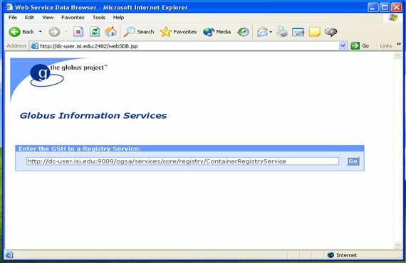
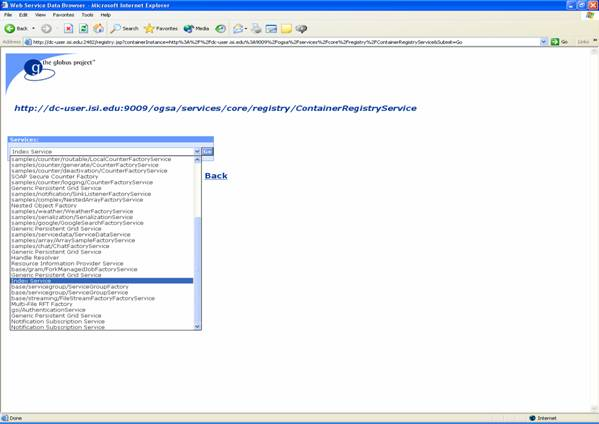
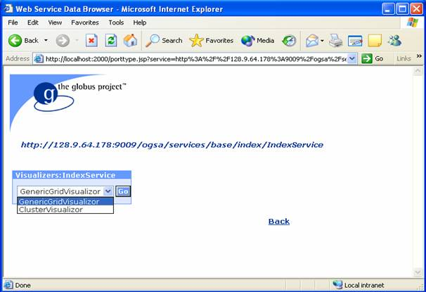

Globus > Toolkit > Documentation > 3.2 > WS Information Services > Developer's Guide <
Overview
API: Aggregator | Service
Data Providers
WS Service Data Providers
>Web Service Data Browser
Querying Service Data (Xpath)
Querying Service Data (ogsi-find-service-data)
Querying Examples
GLUE schema
Migrating from Pre-WS to WS: Porting Guide
This document is intended to give you a quick introduction to the Web Service
Data Browser (WebSDB), which is the web interface to exposing
service data within the Globus Toolkit® Versions 3.x.
The WebSDB is a simple user interface that allows you to view the details of
the Grid services available to you from a Registry configured by your administrator.
Service data can be viewed in various formats, depending on your requirements.
All Grid services expose service data. The WebSDB makes it easy to display the service data and use different Visualizers for analyzing the data. When you start the WebSDB, it obtains a list of existing services from the Registry. A Visualizer allows you to view the service data in a particular format.
This page contains the following topics:
This document assumes that the Web Service Data Browser has been appropriately installed and configured as described in Web Service Data Browser Installation and Configuration.
To access the WebSDB, enter the URL of its installation in your Internet browser. For details refer to Web Service Data Browser Installation and Configuration.
This connects to the WebSDB and displays the Registry Selection page with a default value taken from the globus-sdb.conf file, as shown in the following example:

You can also enter a Grid Service Handle (GSH) for a Registry other than the default in the Registry Selection page. When you click on the Go button, the WebSDB displays a pull-down menu containing a list of the Grid services in the configured Registry, as shown in the following example:
After you start the Web Service Data Browser and connect to a Registry, you can select a service from the Registry and then use any of the Visualizers available in your configuration to display service data in various views.
The remainder of this document describes and illustrates these functions in detail.
The Services: pull-down menu in the Web Service Data Browser displays all of the Grid services available to you from the configured Registry. For this example, we will be working with an Index Service.
Scroll down in the Services: menu, select Index Service and click Go:

A pull-down menu appears displaying the Visualizers available for that service, as shown in the following example. A Visualizer determines the type, amount, and format of the service data displayed and uses an XML stylesheet to display the data in any desired way, such as graphically as the data changes. The Visualizers: menu allows you to choose a defined Visualizer to view a selected service.
Scroll down in the Visualizers: menu, select the desired visualizer and click Go:

The Web Service Data Browser provides the following two default Visualizers:
For information on adding existing and creating new Visualizers for specific service data, seeWeb Service Data Browser Installation and Configuration.
The default Visualizers are described in the following sections.
The Generic Grid Visualizer displays the data common to all services. This Visualizer displays a list of all the Interface Names (port types) and Service Data Names for a particular service, and is always available for any Grid service.
The output of the Generic Grid Visualizer for our "Index Service" example appears as follows:

The Cluster Visualizer can be used to display GLUE schema cluster information and only appears when you select a service that publishes that information.
Note: A single cluster can contain information about multiple hosts.
The output of the Cluster Visualizer for our "Index Service" example appears as follows:

You can add a Visualizer to the Web Service Data Browser as follows:
Adding a Visualizer is described in more detail in Web Service Data Browser Installation and Configuration.
Because Visualizers work within browser windows, you can just "bookmark" the output page of a Visualizer either by saving the URL of the page or by adding it to Favorites in your Internet browser. You can include a bookmarked URL as a link on other pages. The bookmarked URL will always display the most current data for a given service and Visualizer. You can also bookmark pages that specify particular registries or services.
Note: You can directly reach bookmarked pages without going through the previous steps described in this document.
Additional documents of interest for GT 3.2 Information Services are as follows: